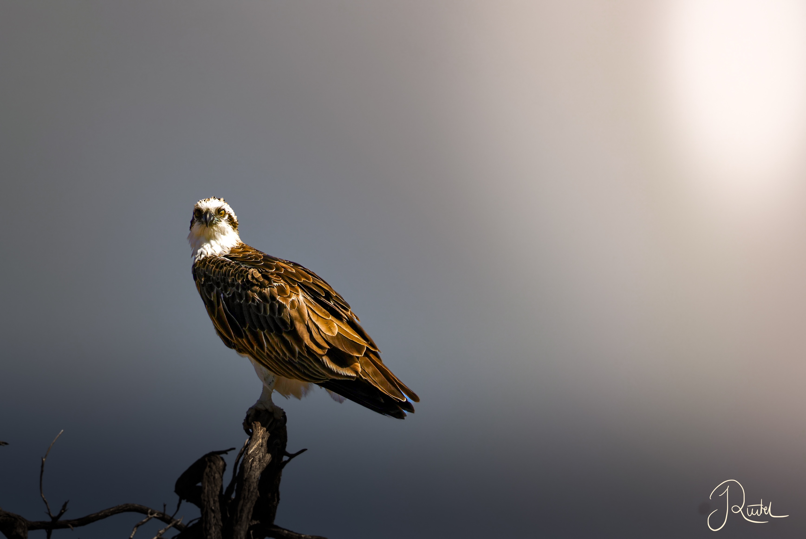

Welcome to a land down under

Black flying foxes in Tom Price
The air smells different. It is the first thing I notice, as I step into the hot, dry air. Somehow sweeter.
It is early in the morning, the sun just rose and everyone is still asleep. To not disturb anyone I decide to do a stroll along the beach.

Yardie Creek impresses with a variety of wildlife like this Pandion haliaetus ssp. cristatus

One of the puppies playing with a leaf

One of the wilddogs is watching out over the others